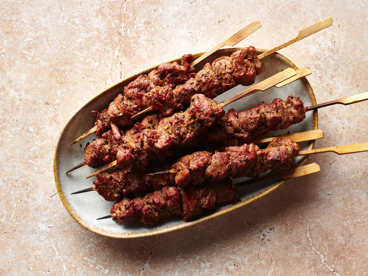

Home
Lamb Skewers

Description
In China, most street vendors use a combination of lean and fatty lamb for skewers. For example, a skewer could
include 6 lean pieces and 2-3 fatty pieces. After grilling, the fat shrinks dramatically and becomes crispy. It
makes the skewers incredibly delicious.
For shooting this recipe, I used lamb leg cut. After separating the fat and the lean meat, I cut them into small
cubes (1.5-2 cm/about ½ inch) then mixed them on the skewers.
Ingredients
- 700g lamb (ideally containing 25% fat)
- 1 onion, sliced
- 1 teaspoon salt
- 1 tablespoon chili powder or to taste
- 1 tablespoon cumin powder
Steps
- Cut the lamb into cubes (1½-2 cm / ½ in). Put into a bowl. Mix with onion and salt. Leave to marinate for at
least 40 mins
- Light up charcoal in your grill. While waiting for the flame to subside, thread the lamb onto the skewers.
Evenly distribute the lean pieces and fatty ones (discard the onion)
- When the charcoal glows and there's no more visible flame, place the skewers over the cooking grid. Flip
frequently to sear the meat evenly
- Once the meat turns pale, sprinkle chili powder and cumin powder all over.
- Divide the skewers into two parts and hold them with each hand. Dab and rub one lot over another. This will
help the oil generated from the fat to flow onto the lean meat
- Continue cooking until the meat browns evenly and there’s no pinkness on the surface (do not overcook).
Remove from the heat and serve immediately.